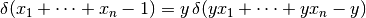
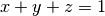
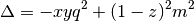
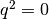

Feynman Parameters¶
When integrating a denominator like , the idea is to introduce auxiliary parameters in order to make the denominator simpler. We start with the identity:
(1)
which can be proven easily:
>>> var("A B")
(A, B)
>>> integrate(1/(x*A + (1-x)*B)**2, (x, 0, 1))
1/(A*B - A**2) - 1/(-A*B + B**2)
>>> simplify(_)
1/(A*B)
By repeatedly differentiating with respect to B:
(2)
Then we prove:
(3)
For we get (1) and if it holds for  it also holds for
, because we multiply (3) by and get:
it also holds for
, because we multiply (3) by and get:
![{1\over A_1A_2\cdots A_n}{1\over A_{n+1}} =
= \int_0^1 \d x_1\cdots\int_0^1 \d x_n (n-1)!\,\delta(x_1 + \cdots +x_n-1)
{1 \over \left(x_1A_1 + \cdots + x_nA_n\right)^n A_{n+1}} =
= \int_0^1 \d x_1\cdots\int_0^1 \d x_n (n-1)!\,\delta(x_1 + \cdots +x_n-1)
\int_0^1 \d x \int_0^1 \d y {n y^{n-1} \delta(x+y-1)
\over \left(xA_{n+1} +
y\left(x_1A_1 + \cdots + x_nA_n\right)\right)^{n+1}}
= \int_0^1 \d x_1\cdots\int_0^1 \d x_n
\int_0^1 \d y {n!\,\delta(x_1 + \cdots +x_n-1) y^{n-1}
\over \left((1-y)A_{n+1} +
y\left(x_1A_1 + \cdots + x_nA_n\right)\right)^{n+1}}=
= \int_0^{1\over y} \d x_1\cdots\int_0^{1\over y} \d x_n
\int_0^1 \d y {n!\,\delta(yx_1 + \cdots +yx_n-y) y^n
\over \left((1-y)A_{n+1} +
y\left(x_1A_1 + \cdots + x_nA_n\right)\right)^{n+1}}=
= \int_0^{1\over y} y\d x_1\cdots\int_0^{1\over y} y\d x_n
\int_0^1 \d y {n!\,\delta(yx_1 + \cdots +yx_n-y)
\over \left((1-y)A_{n+1} +
\left(yx_1A_1 + \cdots + yx_nA_n\right)\right)^{n+1}}=
= \int_0^1 \d z_1\cdots\int_0^1 \d z_n
\int_0^1 \d y {n!\,\delta(z_1 + \cdots +z_n-y)
\over \left((1-y)A_{n+1} +
\left(z_1A_1 + \cdots + z_nA_n\right)\right)^{n+1}}=
= -\int_0^1 \d z_1\cdots\int_0^1 \d z_n
\int_1^0 \d y' {n!\,\delta(z_1 + \cdots +z_n+y'-1)
\over \left(y'A_{n+1} +
\left(z_1A_1 + \cdots + z_nA_n\right)\right)^{n+1}}=
=
\int_0^1 \d x_1\cdots\int_0^1 \d x_{n+1} {n!\,
\delta(x_1 + \cdots + x_{n+1}-1)
\over \left(x_1A_1 + \cdots + x_{n+1}A_{n+1}\right)^{n+1}}](../../_images/math/cf70bb93f43f798bd83db65c66d857408addd8b2.png)
Where we used (2) and the fact, that , after the substituation we also
restricted the limits of integration from 1 to , since  ,
,  ,
... are all positive.
,
... are all positive.

Example 2¶
where
In the last part we used . We now shift  by introducing:
by introducing:
and we get:
where

thus:
![\int d^4 k \int_0^1\d x \d y\d z {2\delta(x+y+z-1)\over D^3} =
= \int \d^4 l \int_0^1\d x \d y\d z {2\delta(x+y+z-1)\over
(l^2 - \Delta + i\epsilon)^3 } =
= (-i)\int \d^4 l_E \int_0^1\d x \d y\d z {2\delta(x+y+z-1)\over
(l_E^2 + \Delta)^3 } =
= (-i)\int \d\Omega_4 \int_0^\infty \d l_E \int_0^1\d x \d y\d z
{2\delta(x+y+z-1)l_E^3\over (l_E^2 + \Delta)^3 } =
= (-i4\pi^2)\int_0^1\d x \d y\d z \delta(x+y+z-1) \int_0^\infty \d l_E
{l_E^3\over (l_E^2 + \Delta)^3 } =
= (-i4\pi^2)\int_0^1\d x \d y\d z \delta(x+y+z-1) \int_\Delta^\infty \d h
{h-\Delta \over 2 h^3 } =
= (-i4\pi^2)\int_0^1\d x \d y\d z \delta(x+y+z-1) {1\over 4\Delta} =
= (-i\pi^2)\int_0^1\d x \d y\d z {\delta(x+y+z-1) \over \Delta} =
= (-i\pi^2)\int_0^1\d x \d y\d z {\delta(x+y+z-1) \over
(1-z)^2m^2 - xyq^2}](../../_images/math/11a517272a10785e80a19f2d83fb2f219a30bc8f.png)
This integral has an infrared divergence. We can cure this by pretending that
the photon has a small nonzero mass  , then in the denominator of the
photon propagator we need to change:
, then in the denominator of the
photon propagator we need to change:
This denominator is multiplied by  later on, so at the end we need to do the
change:
later on, so at the end we need to do the
change:
and we get:
for  we get:

We can use the following integral:
that is equal to in the limit .
here are a few special cases for ,  and :
and :
![\int_{0}^{1} \frac{1 - z}{1 - z + z^{2}}\,dz = \frac{1}{9} \pi \sqrt{3}
\int_{0}^{1} \frac{1 - z}{1 - \frac{7}{4} z + z^{2}}\,dz = \frac{1}{2} \operatorname{log}\left(4\right) + \frac{1}{15} \sqrt{15} \operatorname{atan}\left(\frac{1}{15} \sqrt{15}\right) + \frac{1}{15} \sqrt{15} \operatorname{atan}\left(\frac{7}{15} \sqrt{15}\right)
\int_{0}^{1} \frac{1 - z}{1 - \frac{17}{9} z + z^{2}}\,dz = \frac{1}{2} \operatorname{log}\left(9\right) + \frac{1}{35} \sqrt{35} \operatorname{atan}\left(\frac{1}{35} \sqrt{35}\right) + \frac{1}{35} \sqrt{35} \operatorname{atan}\left(\frac{17}{35} \sqrt{35}\right)](../../_images/math/e2c94314ea995dd284ab081705772d94574d269d.png)
Code:
>>> from sympy import log, atan, var, sqrt, Eq, Integral, S
>>> var("z m mu")
>>> F = -log(z*(1 - 2/m) + 1/m + z**2/m)/2 + \
atan((1 - 2/m + 2*z/m)/sqrt(-1 + 4/m))/sqrt(-1 + 4/m)
>>> f = F.diff(z).simplify()
>>> print f
(1 - z)/(1 - 2*z + m*z + z**2)
>>> integ_f_0_1 = F.subs(z, 1) - F.subs(z, 0)
>>> e = Eq(Integral(f.subs(m, mu**2), (z, 0, 1)), integ_f_0_1.subs(m, mu**2))
>>> print e
Integral((1 - z)/(1 - 2*z + z**2 + z*mu**2), (z, 0, 1)) == log(mu**(-2))/2 + atan((-1 + 4/mu**2)**(-1/2))/(-1 + 4/mu**2)**(1/2) - atan((1 - 2/mu**2)/(-1 + 4/mu**2)**(1/2))/(-1 + 4/mu**2)**(1/2)
>>> print e.subs(mu, 1)
Integral((1 - z)/(1 - z + z**2), (z, 0, 1)) == pi*3**(1/2)/9
>>> print e.subs(mu, S(1)/2)
Integral((1 - z)/(1 - 7*z/4 + z**2), (z, 0, 1)) == log(4)/2 + 15**(1/2)*atan(15**(1/2)/15)/15 + 15**(1/2)*atan(7*15**(1/2)/15)/15
>>> print e.subs(mu, S(1)/3)
Integral((1 - z)/(1 - 17*z/9 + z**2), (z, 0, 1)) == log(9)/2 + 35**(1/2)*atan(35**(1/2)/35)/35 + 35**(1/2)*atan(17*35**(1/2)/35)/35
Then for and small we get: